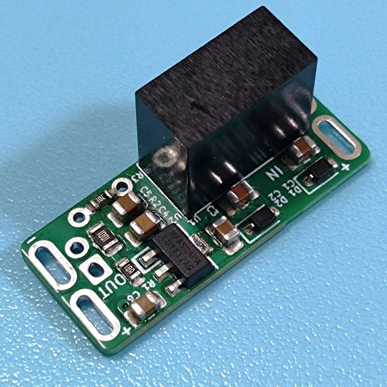
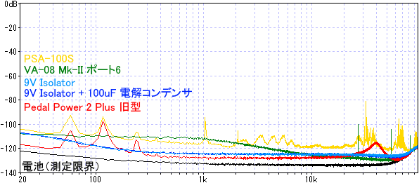
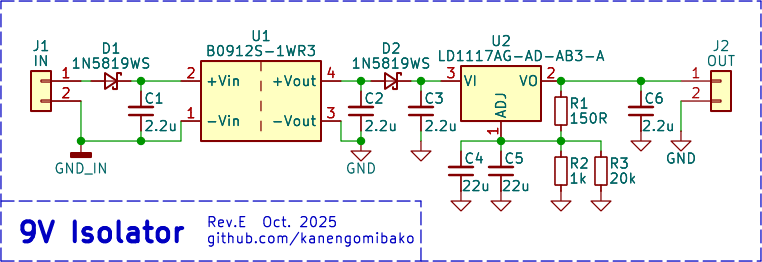
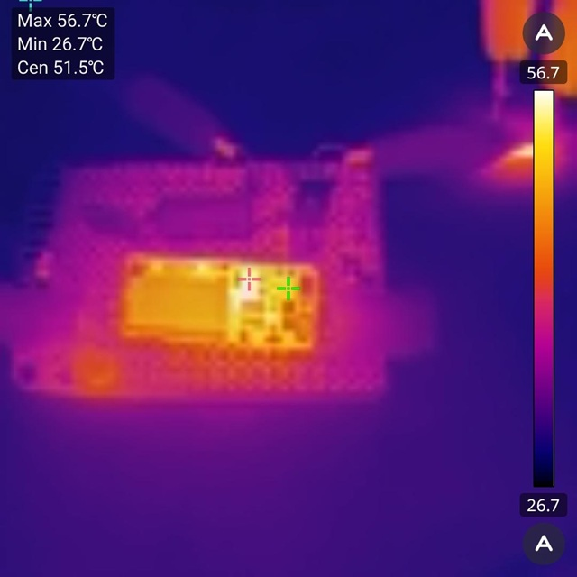

9V Isolator
2025年11月04日 カテゴリー：自作エフェクター（アナログ）

9V電源入力から、アイソレートされた9V電源を出力するモジュールです。 電源を分岐ケーブルで接続している場合（→ 電源分岐接続時のノイズ測定）のグラウンド分離や、ファズ等に使う負電源の生成を手軽に行うことができます。 KiCadデータ・説明書はGitHubにあります。
→ 販売ページはこちら。
開発記録
グラウンドの分離には絶縁型DC-DCコンバータを使います。そしてノイズ低減と出力電圧調整のため、可変リニアレギュレータを搭載します。 出力電圧は、多くのパワーサプライで標準的な9.3Vに設定し、出荷前に9.2V～9.3Vの範囲内であることを確認しています。
レギュレータの検討
最初はJLCPCBで標準在庫しているLM317（1.5A出力）を使いました。充分低ノイズのように思われましたが、さらに低ノイズなレギュレータを検討することにしました。
MIC5205とSPX5205を試しました。 データシートにはローノイズと記載がありますが、10dB以上ノイズが多いという結果となりました。また、LM350やLM317（100mA出力）でもノイズが増えました。 LT3045といった高価なレギュレータであれば超低ノイズが望めますが、販売価格が上がり過ぎます。
LM1117（1A出力）は低ドロップ電圧でも低ノイズだった（→ CP-205 改造）ので、これの小型パッケージのものを探し、最終的にUTC製のLD1117を採用しました。
トランジスタのフィルタ
低ノイズなトランジスタを使ったフィルタ（→ Capacitance Multiplier）を後段に入れると、さらにノイズが低減できることを確認しました。 ただしこの場合、負荷の変動に対して電圧が変化しやすくなるので（ロードレギュレーション悪化）、採用しませんでした。
出力部にはコンデンサを追加できるようにスルーホールパッドがあります。ただノイズレベルとしてはほとんど変わりがないため、コンデンサを追加する必要性はほとんどありません。他のパワーサプライとのノイズ比較データを下図に示します（出力30mA）。
電池ほどの低ノイズではありませんが、特に問題ないレベルだと思います。ファズ等でどうしてもノイズが気になる場合は、ローパスフィルタを追加するとよいでしょう。
回路図
絶縁型DC-DCコンバータやレギュレータには最低負荷電流が必要で、R1を小さくして約8mAの電流を流しています。R2の消費電力が約60mWなので、念のため2012Mサイズ（125mW）としました。 下写真の通り、最もレギュレータの発熱が大きく56℃（出力70mA、気温25℃付近で測定）でした。動作には問題ないものの、取り扱いに注意が必要となります。
